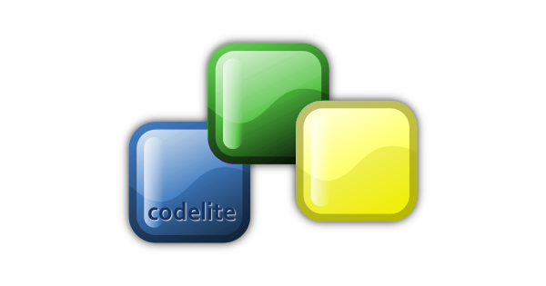
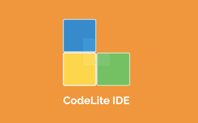

В августе 2006 Eran Ifrah начал небольшой проект, который был назван CodeLite. Идея заключалась в том, чтобы создать библиотеку на основе ctags, SQLite (отсюда, CodeLite) и Yacc.CodeLite — открытая кроссплатформенная среда разработки программного обеспечения для языков программирования C/C++, PHP и Node.js, использующая инструментарий wxWidgets. Чтобы соответствовать духу открытого программного обеспечения, CodeLite скомпилирована и отлажена исключительно свободными инструментами (MinGW и GDB)
Особенности CodeLite: управление проектами, автодополнение (ctags + clang), рефакторинг кода, подсветка синтаксиса, интеграция Subversion и Git, интеграция Cscope, интеграция UnitTest++, интерактивный отладчик, надстроенный над GDB, и мощный редактор исходного кода (на основе Scintilla).CodeLite распространяется по лицензии GNU General Public License v2 или более поздней версии. Является свободным программным обеспечением. CodeLite в настоящее время, будучи разработан и отлажен, использует себя в качестве платформы разработки.CodeLite в современных версиях также поддерживает проекты на PHP и Node.js.
